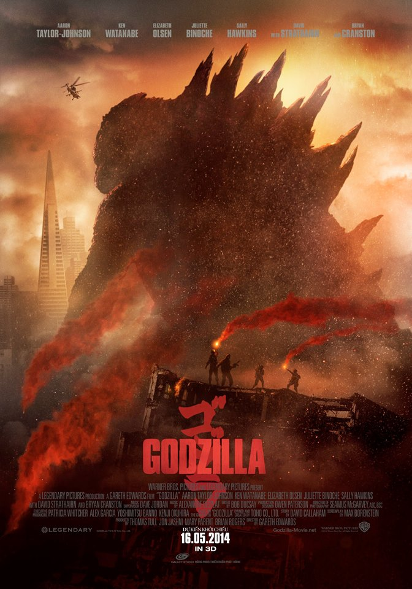

Sticker Mule. Best Place For Your Sticker Needs!
Bộ phim bắt đầu với đoạn phim tài liệu về chuẩn bị kích nổ một quả bom hạt nhân tại đảo san hô Bikini. Hàng gai khổng lồ nổi lên từ mặt nước khi quả bom được kích nổ.
Năm 1999, các nhà khoa học Ishiro Serizawa và Vivienne Graham (Ken Watanabe và Sally Hawkins) được gọi tới một mỏ đá ở Philippines, nơi một bộ xương khổng lồ và hai vật hình trứng đã được phát hiện. Một thời gian ngắn sau khi một trong những vật hình trứng đã nở, nhà máy điện hạt nhân Janjira gần Tokyo, Nhật Bản bị một vụ nổ và rò rỉ phóng xạ. Giám sát nhà máy Joe Brody (Bryan Cranston) đã mất vợ (Juliette Binoche) trong vụ tai nạn. Trận động đất đã khiến cho người dân di tản và kiểm dịch khu vực Janjira.
Mười lăm năm sau, con trai của Joe - Ford (Aaron Taylor-Johnson) là một sĩ quan xử lý bom mìn trong Hải quân Hoa Kỳ, sống ở San Francisco với vợ Elle (Elizabeth Olsen) và con trai Sam (Carson Bolde). Khi Joe bị bắt vì tội xâm phạm trong khu vực cách ly, Ford đi đến Nhật Bản để hỗ trợ ông. Joe vẫn còn bị ám ảnh bởi cái chết của vợ mình và muốn phát hiện ra nguyên nhân thực sự của thảm họa. Ông thuyết phục con trai mình đi cùng ông đến Janjira, nơi họ phát hiện ra không có dấu hiệu của phóng xạ. Họ bị bắt và đưa đến một cơ sở bí mật được xây dựng trong đống đổ nát của nhà máy điện. Cơ sở được xây dựng xung quanh một cái kén lớn (tương tự vật đã thấy ở Philippines) đang được nghiên cứu bởi Serizawa và Graham. Cái kén nở và một sinh vật có cánh khổng lồ chui ra, tàn phá cơ sở và bay đi. Joe thương nặng trong vụ hỗn loạn và qua đời. Serizawa, Graham, và Ford tham gia một nhóm hải quân Mỹ để theo dõi con quái vật, bằng cách sử dụng tàu sân bay USS Saratoga làm căn cứ hoạt động.
rên tàu Saratoga, Ford biết được từ Serizawa và nhóm của ông rằng sinh vật anh đã nhìn thấy Janjira là một MUTO (Sinh vật khổng lồ không xác định trên mặt đất), một sinh vật cổ đại từ thời xa xưa mà lúc đó lượng chất phóng xạ gấp nhiều lần bây giờ. Khi bức xạ của trái đất giảm xuống nó di chuyển xuống sâu dưới lòng đất và ngủ đông, nó sau đó đã chết và sinh ra 2 kén trứng. Nó bị săn bởi một con vật to lớn hơn nhiều đã được đánh thức trong một chuyến thám hiểm và thử nghiệm hạt nhân ở biển sâu trong năm 1954. Sự tồn tại của nó đã bị che giấu sau nhiều thất bại trong việc thủ tiêu nó với vũ khí hạt nhân. Ford tiết lộ rằng cha của ông đã theo dõi một hình thức vị bằng tiếng vang từ khu vực Janjira, dẫn nhóm nghiên cứu tin rằng MUTO còn giao tiếp với một cái gì khác, ngoài Godzilla ra.
“Một biệt đội của quân đội Mỹ ở Hawaii tìm thấy xác một tàu ngầm hạt nhân của Nga giữa rừng đã báo cáo một cuộc tấn công và nhìn thấy MUTO ăn lò phản ứng của con tàu. Quân đội tấn công MUTO và một trận chiến nổ ra tại sân bay quốc tế Honolulu. Sinh vật lớn hơn, có tên là "Godzilla", xuất hiện và chiến đấu với MUTO, cuối cùng nó đã khiến MUTO bay mất. Vỏ MUTO thứ hai, mang đến từ Philippines được đưa vào kho chất thải hạt nhân tại núi Yucca đã nở, nó có kích thước lớn hơn gấp rưỡi lần MUTO kia và không có cánh nên được xác định là con MUTO cái, MUTO cái sau đó đã tàn phá Las Vegas trên đường đi về phía tây. Serizawa tin rằng hai sinh vật sẽ gặp nhau để sinh sản.
Quân đội có kế hoạch giết cả ba con quái vật với vũ khí hạt nhân mạnh nhất của họ. Vì MUTO có thể phát ra EMP (xung điện từ) cực mạnh, họ không thể sử dụng máy bay ném bom hoặc tên lửa, vì vậy họ vận chuyển quả bom với ngòi nổ cơ học bằng đường bộ. Tuy nhiên, MUTO đực bay đã bay đến cướp đầu đạn và đưa nó cho MUTO cái và MUTO cái xây dựng một cái tổ xung quanh nó ở giữa trung tâm thành phố San Francisco, đe dọa mạng sống của hàng triệu người. Godzilla đến San Francisco để đối đầu với những con quái vật.
Quân đội có kế hoạch giết cả ba con quái vật với vũ khí hạt nhân mạnh nhất của họ. Vì MUTO có thể phát ra EMP (xung điện từ) cực mạnh, họ không thể sử dụng máy bay ném bom hoặc tên lửa, vì vậy họ vận chuyển quả bom với ngòi nổ cơ học bằng đường bộ. Tuy nhiên, MUTO đực bay đã bay đến cướp đầu đạn và đưa nó cho MUTO cái và MUTO cái xây dựng một cái tổ xung quanh nó ở giữa trung tâm thành phố San Francisco, đe dọa mạng sống của hàng triệu người. Godzilla đến San Francisco để đối đầu với những con quái vật.
Quân đội có kế hoạch giết cả ba con quái vật với vũ khí hạt nhân mạnh nhất của họ. Vì MUTO có thể phát ra EMP (xung điện từ) cực mạnh, họ không thể sử dụng máy bay ném bom hoặc tên lửa, vì vậy họ vận chuyển quả bom với ngòi nổ cơ học bằng đường bộ. Tuy nhiên, MUTO đực bay đã bay đến cướp đầu đạn và đưa nó cho MUTO cái và MUTO cái xây dựng một cái tổ xung quanh nó ở giữa trung tâm thành phố San Francisco, đe dọa mạng sống của hàng triệu người. Godzilla đến San Francisco để đối đầu với những con quái vật.
Quân đội có kế hoạch giết cả ba con quái vật với vũ khí hạt nhân mạnh nhất của họ. Vì MUTO có thể phát ra EMP (xung điện từ) cực mạnh, họ không thể sử dụng máy bay ném bom hoặc tên lửa, vì vậy họ vận chuyển quả bom với ngòi nổ cơ học bằng đường bộ. Tuy nhiên, MUTO đực bay đã bay đến cướp đầu đạn và đưa nó cho MUTO cái và MUTO cái xây dựng một cái tổ xung quanh nó ở giữa trung tâm thành phố San Francisco, đe dọa mạng sống của hàng triệu người. Godzilla đến San Francisco để đối đầu với những con quái vật.
Quân đội có kế hoạch giết cả ba con quái vật với vũ khí hạt nhân mạnh nhất của họ. Vì MUTO có thể phát ra EMP (xung điện từ) cực mạnh, họ không thể sử dụng máy bay ném bom hoặc tên lửa, vì vậy họ vận chuyển quả bom với ngòi nổ cơ học bằng đường bộ. Tuy nhiên, MUTO đực bay đã bay đến cướp đầu đạn và đưa nó cho MUTO cái và MUTO cái xây dựng một cái tổ xung quanh nó ở giữa trung tâm thành phố San Francisco, đe dọa mạng sống của hàng triệu người. Godzilla đến San Francisco để đối đầu với những con quái vật.
alert-text